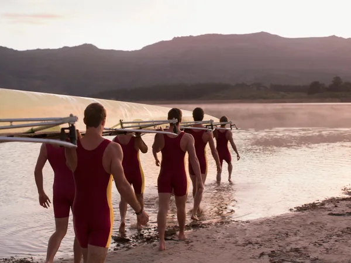
1921
Edwin Strake opens a tin shed on the Hamble and builds racing shells for the Southampton clubs. The first boat is an eight. The second is faster.
The Carvel. One car, forty a year, planked by hand in a boat shed on the Hamble.
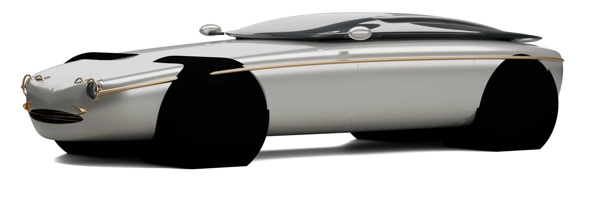
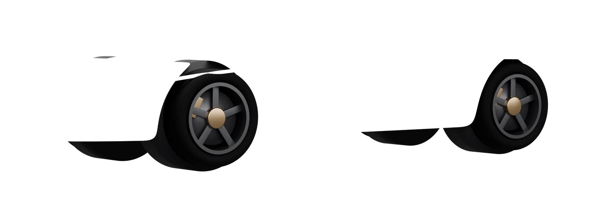
A hull is faired to one line. So is the Carvel.
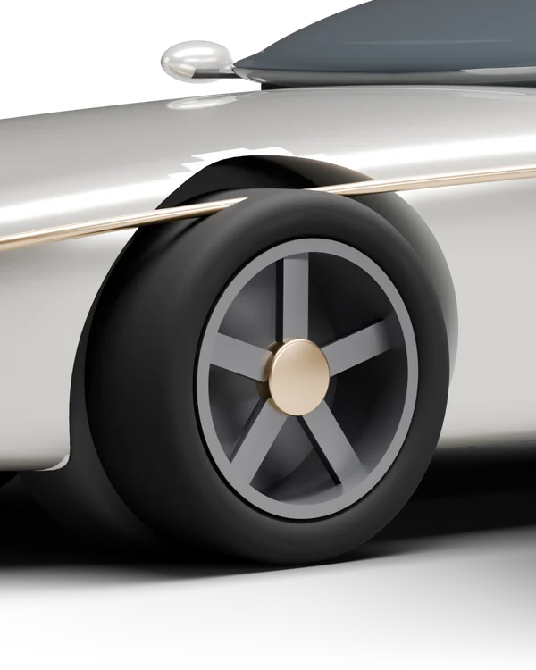
A half-round of marine bronze runs the full length of the car at the sheer line, where a hull carries its rubbing strake. It is not trim. It is the datum every panel is faired to, and it is the only line on the car we drew before the body.
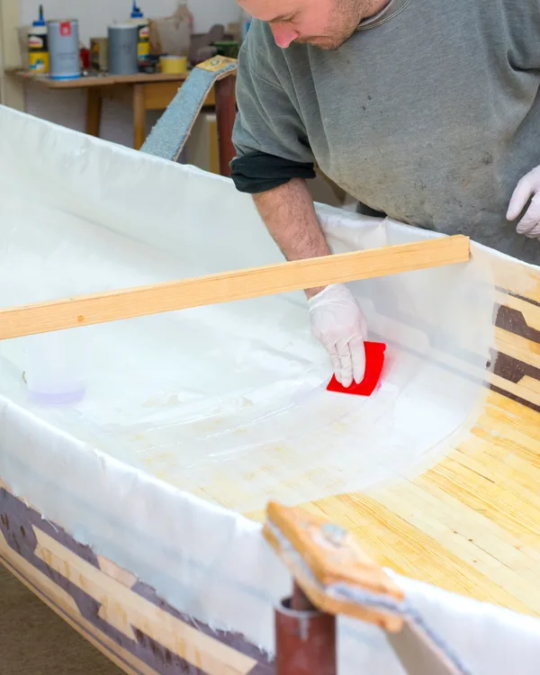
The body is 2 mm aluminium formed over cedar bucks, the way the yard built floats in 1934: a panel is wheeled, offered up, marked, wheeled again. Forty-one panels. Two people. About nine weeks a car.
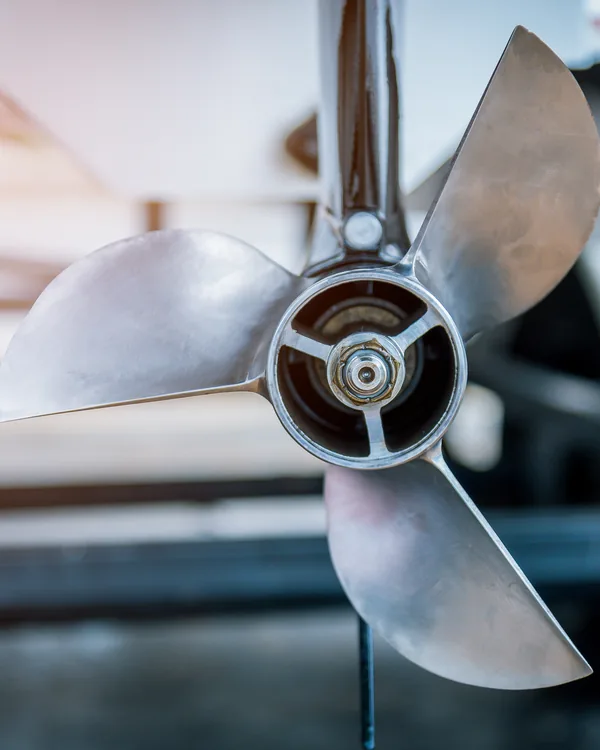
Grille ring, lamp bezels, hubs and strake are cast in the same silicon bronze as our propellers, by the same foundry in Poole, and left unlacquered. In salt air they darken to the colour of an old cleat. That is the idea.
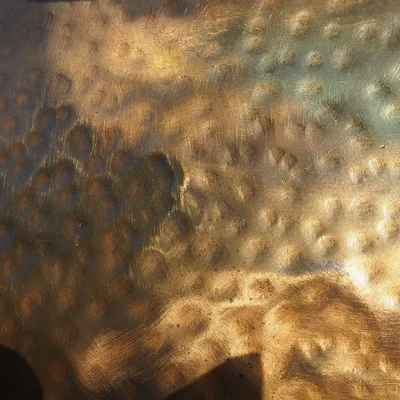
Strake, bezels, hubs, dial. Cast, hand-finished, never plated.
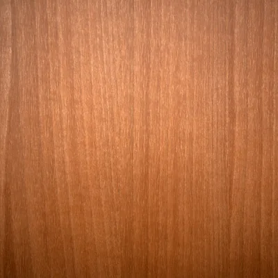
The dash and the tunnel, cold-moulded in three veneers like a runabout’s deck.
Headliner and door cards, in the cotton duck the yard once cut sails from.
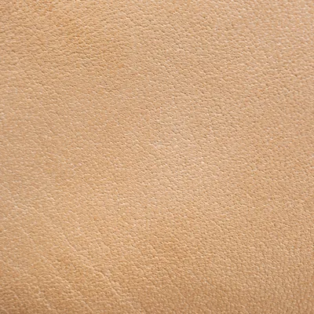
Vegetable-tanned bridle hide, cut and stitched in the loft above the shed.
The yard built boats for fifty-eight years, nothing for thirty-five, and cars for the last twelve. The tools are the same.
Scroll on — the years run to the right.
1921
Edwin Strake opens a tin shed on the Hamble and builds racing shells for the Southampton clubs. The first boat is an eight. The second is faster.
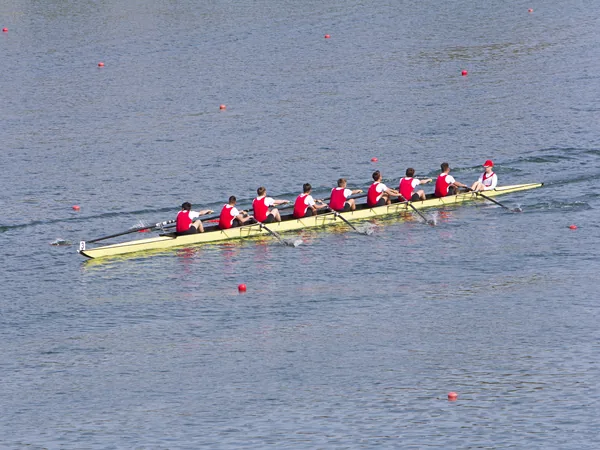
1929
Three Henley finals in a row are rowed in Strake shells. The yard takes on two apprentices, a second wheel and its first bank loan.
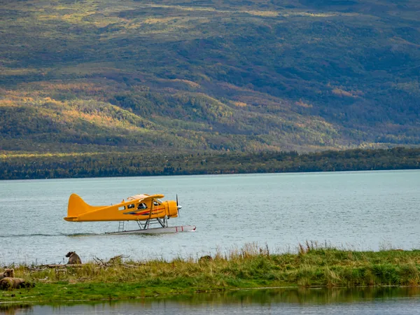
1934
Floats for the Solent seaplane trials. The yard learns to wheel aluminium over wooden bucks, a skill it never puts down.
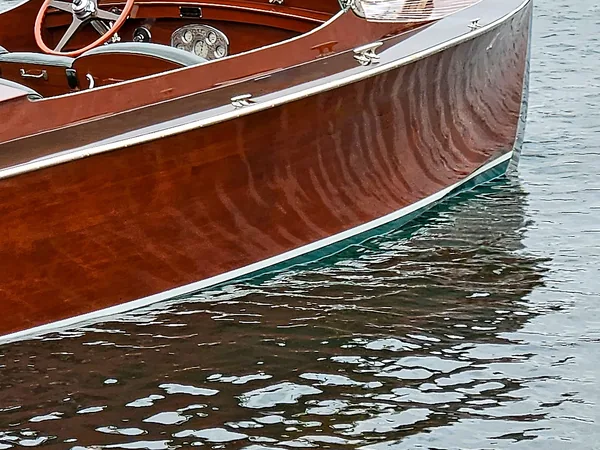
1952
The Strake 26, a cold-moulded mahogany runabout. A hundred and forty are built by 1965. Most are still afloat; one is in the shed.
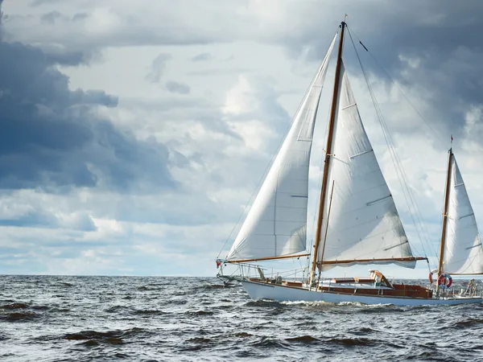
1968
Ocean-racing yawls. A half-round bronze rubbing strake becomes the yard’s signature, on every hull that leaves the slip.
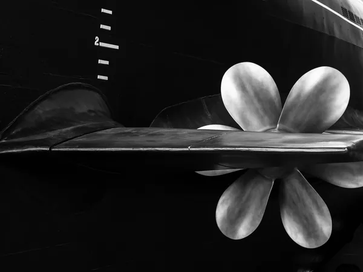
1979
The last yawl launches and the shed closes. The bucks, the wheels and the patterns go up into the loft, and stay there.
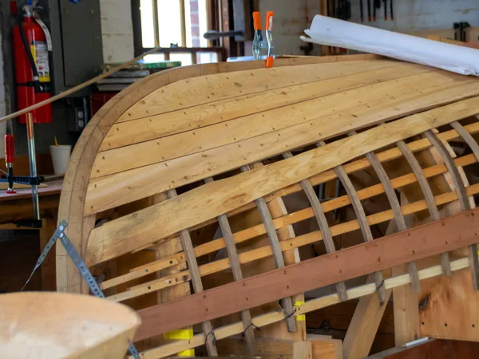
2014
Anna Strake, Edwin’s great-granddaughter, reopens the shed. The first aluminium panel is wheeled over the 1934 bucks in March.
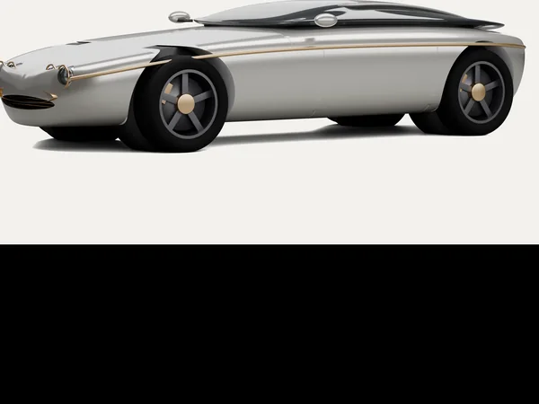
2019
The Carvel is shown on the slipway at high water. Forty commissions in a week. The order book closes and has not reopened since.
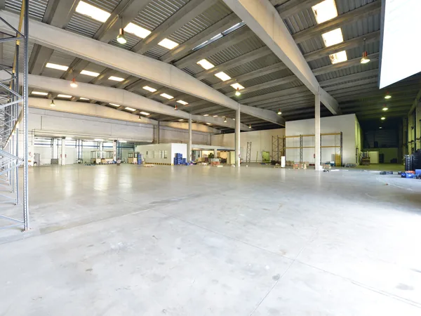
2026
Hull 200 leaves the new shed. The Bowline, an open Carvel, is announced for 2027, thirty a year, same bucks.
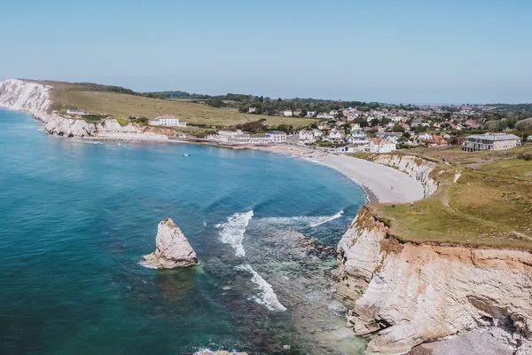
Same hull, no roof, a tonneau of sailcloth over the passenger seat. Thirty a year from spring 2027. The first ten are already spoken for.
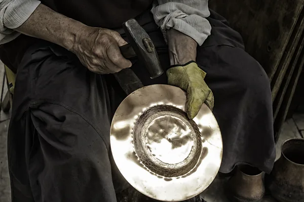
Two hundred Carvels in seven years, every one planked over the same cedar bucks. Hull 200 is Ebb green on bronze wheels and is going to a rowing coach in Henley.
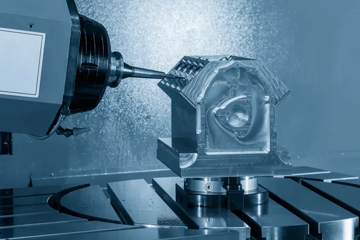
Why the Carvel’s engine is naturally aspirated, why it is built on a bench by two people in Coventry, and why the redline is where it is.
Press enquiries: press@strakecoachworks.co.uk
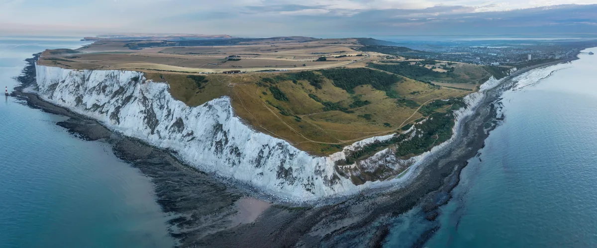
Made for the road that keeps the water on one side.
Every choice below changes the car in front of you. Prices include VAT. Delivery is fourteen months from deposit.
Strake Coachworks, The Old Shed, Hamble-le-Rice, Southampton. Saturday mornings by appointment, or any weekday if you are passing on the water — there is a pontoon. Bring boots; the slip is wet.
Write to us with the hull you have in mind and Anna or Tom will reply within two working days.
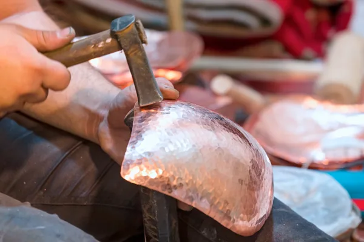
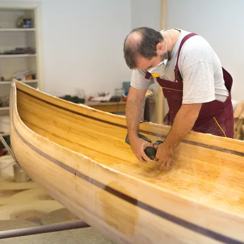